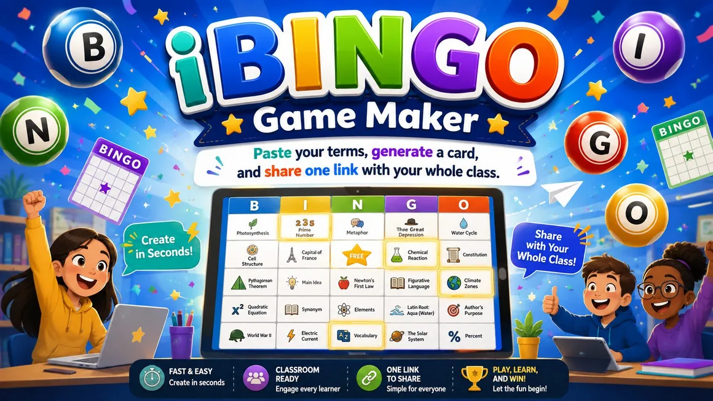

This opening slide sets the tone for iBINGO Game Maker. I want the first impression to be simple: this is a classroom game starter, not another complicated platform. The promise is right there on the slide. Paste your terms, generate a card, and share one link with the class. That matters because teachers do not need another tool that takes longer to prepare than the activity itself. Here, the starting point is a list of words or concepts you already have. The next slide pulls that idea into the everyday classroom problem this tool solves.
Vocabulary review, unit warm-ups, station work, and quick checks often start with the same thing: a list.
This slide names the classroom problem directly. Most teachers already have the hard part done: they have the vocabulary list, review terms, or concepts from the unit. What usually slows things down is the packaging. You copy terms into a template, shuffle the cards, print versions, or send files around. iBINGO trims that down to the part that matters. Paste the list, pick the game options, and generate the share link. I would use this when I need something quick that still feels like an activity, not a worksheet in costume. Next, I show the workflow in three moves.
Add terms one per line, or import a file.
Choose the grid size and create the cards.
Send one link to the whole class.
This slide reduces the tool to three moves: paste, generate, and share. I like this framing because it keeps the explanation from turning into a feature tour. A feature tour can be useful later, but for teachers, the first question is usually whether the tool fits into the time they actually have. It does. Students can open the same link and get the same set of terms arranged on randomized cards. That keeps preparation simple while still giving students their own card to play. Now I will slow down and show what teachers can put into the tool.
Paste terms one per line, or bring in a file. The tool cleans common formats so teachers can work from what they already have.
Here, I am focusing on input. Teachers can paste terms one per line, or use a file such as CSV, TXT, or Markdown. That is more useful than it may sound, because classroom content lives in odd places: copied from a document, exported from a spreadsheet, or gathered from notes. The source page says Markdown bullets and CSV are cleaned automatically, with the first column used for CSV. That helps keep the tool forgiving. You do not need to format everything perfectly before you start. The next slide moves from the content list to the game choices.
Nine cells for short warm-ups or younger learners.
Sixteen cells when you want more coverage without a long game.
Twenty-five cells with an optional FREE center space.
The source tool offers 3×3, 4×4, and 5×5 grids, plus an optional FREE center for 5×5 cards.
This slide shows the game options. iBINGO gives you three grid sizes: three by three, four by four, and five by five. That matters because not every class activity needs a full classic bingo card. A short vocabulary warm-up might only need nine cells. A larger review before a test might call for the full twenty-five-cell version with a FREE center space. I like that the choices are simple. You are not designing a game system. You are picking the size that matches the time and purpose. Next, I show what happens after students open the link.
Every student opens the same share link, but each card can be arranged differently. No accounts and no server: the game lives inside the link.
This is one of the most important classroom details. The source page says every student who opens the link gets the same terms but a different randomized card. That is exactly what you want for a class game. Everyone works from the same content, but the cards are not identical. It also says no accounts and no server: the game lives inside the link. That kind of design is useful in schools because it lowers the setup burden. You can put the link in your LMS, project it, share it in chat, or post it where students already go. Next, I connect it to actual classroom uses.
Review academic words without another worksheet.
Mix key people, places, formulas, and ideas.
Start class with a low-prep retrieval activity.
Give one group a quick play-and-check task.
This slide moves from how the tool works to where it fits. I would not save iBINGO only for special review days. It works for vocabulary, unit review, warm-ups, and stations because the setup is light. That matters. A tool that only works when you have a lot of prep time will sit unused most of the year. The best use may be retrieval practice: students have to recognize terms, listen for clues, and connect the called item to the card. The activity still feels playful, but it is tied to academic content. Next, I show a teacher-ready play pattern.
Do not only call the word. Give the definition, example, image clue, or scenario. That makes students retrieve meaning, not just scan for a label.
This slide gives a simple way to use the game without overplanning it. The small teacher move here is to call clues, not just answers. If the square says photosynthesis, I might say, this is the process plants use to make food from light, water, and carbon dioxide. Then students have to retrieve the term. That turns the game into a better review activity. You can also ask students to explain why they marked a square before you keep going. That quick pause is where the learning shows up. The next slide makes the case for why this is worth using.
Use terms you already have.
One class link handles distribution.
Cards randomize without extra teacher work.
This slide is the practical case for iBINGO. It respects teacher time. That is not a small thing. Teachers will try almost anything once if it looks useful, but they will only keep using a tool if the setup time stays reasonable. iBINGO checks that box. It works from existing content, gives students randomized cards, and keeps sharing down to one link. That makes it a good fit for quick review, sub plans, station rotations, and those odd eight minutes at the end of class when you want something better than start your homework. The closing slide gives the immediate next step.
Pick one list. Paste it. Generate the card. Share the link. Let the class play.
This final slide keeps the next step small. I would not start by building a giant review game for an entire semester. I would start with tomorrow's terms: maybe twelve vocabulary words, ten review questions, or a quick concept list from the current lesson. Paste them in, generate the card, and share the link. After that first round, it becomes easier to see where the tool belongs in your routine. The point is not to make bingo the lesson. The point is to give students a quick, shared way to rehearse the language and ideas they need to remember.